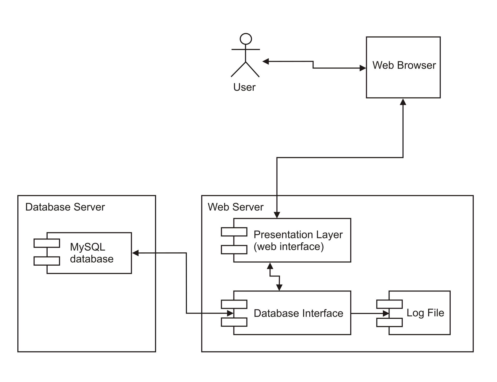

Les diagrammes de déploiement sont constitués de plusieurs formes UML. Les boîtes en trois dimensions, appelées nœuds, représentent les composants du système, qu'ils soient logiciels ou matériels. Les lignes entre les nœuds indiquent les relations et les petites formes à l'intérieur des boîtes représentent les artefacts logiciels qui sont déployés.
Diagramme de déploiement
Il représente l'utilisation de l'infrastructure physique par le système et la manière dont les composants du système sont répartis ainsi que leurs relations entre eux. Les éléments utilisés par un diagramme de déploiement sont principalement les nœuds, les composants, les associations et les artefacts.
Exemple
